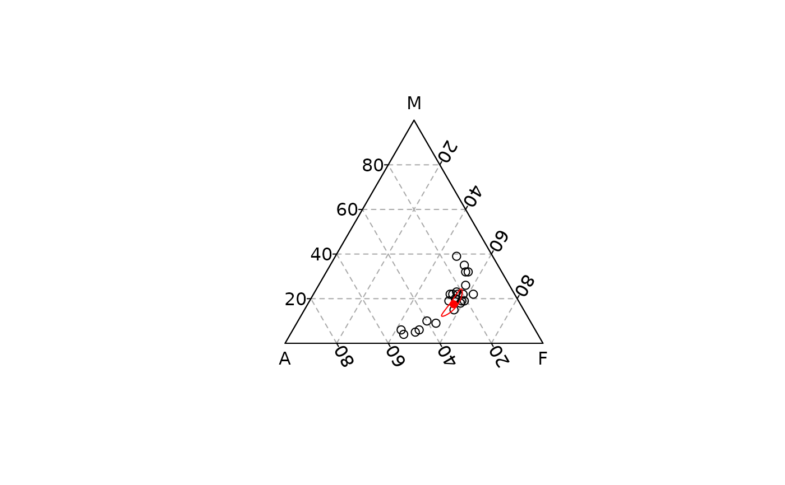

Computes and draws the closed geometric mean of the set of points specified.
Usage
ternary_mean(x, y, z, ...)
# S4 method for numeric,numeric,numeric
ternary_mean(x, y, z, ...)
# S4 method for ANY,missing,missing
ternary_mean(x, y, z, ...)Arguments
- x, y, z
A
numericvector giving the x, y and z ternary coordinates of a set of points. Ifyandzare missing, an attempt is made to interpretxin a suitable way (seegrDevices::xyz.coords()).- ...
Further arguments to be passed to
graphics::points().
See also
Other statistics:
ternary_contour(),
ternary_density(),
ternary_ellipse(),
ternary_hull(),
ternary_pca()
Examples
## Mean
## Data from Aitchison 1986
ternary_plot(lava, panel.first = ternary_grid())
#> [1] 0.2 0.0 0.8
#> [1] 0.8 0.2 0.0
#> [1] 0.0 0.8 0.2
#> [1] 0.2 0.8 0.0
#> [1] 0.0 0.2 0.8
#> [1] 0.8 0.0 0.2
#> [1] 0.4 0.0 0.6
#> [1] 0.6 0.4 0.0
#> [1] 0.0 0.6 0.4
#> [1] 0.4 0.6 0.0
#> [1] 0.0 0.4 0.6
#> [1] 0.6 0.0 0.4
#> [1] 0.6 0.0 0.4
#> [1] 0.4 0.6 0.0
#> [1] 0.0 0.4 0.6
#> [1] 0.6 0.4 0.0
#> [1] 0.0 0.6 0.4
#> [1] 0.4 0.0 0.6
#> [1] 0.8 0.0 0.2
#> [1] 0.2 0.8 0.0
#> [1] 0.0 0.2 0.8
#> [1] 0.8 0.2 0.0
#> [1] 0.0 0.8 0.2
#> [1] 0.2 0.0 0.8
#> [1] 52 52 47 45 40 37 27 27 23 22 21 25 24 22 22 20 16 17 14 13 13 14 24
#> [1] 42 44 48 49 50 54 58 54 59 59 60 53 54 55 56 58 62 57 54 55 52 47 56
#> [1] 6 4 5 6 10 9 15 19 18 19 19 22 22 23 22 22 22 26 32 32 35 39 20
#> [1] 0.2 0.4 0.6 0.8
#> [1] 0.8 0.6 0.4 0.2
#> [1] 0 0 0 0
#> [1] 0 0 0 0
#> [1] 0.2 0.4 0.6 0.8
#> [1] 0.8 0.6 0.4 0.2
#> [1] 0.8 0.6 0.4 0.2
#> [1] 0 0 0 0
#> [1] 0.2 0.4 0.6 0.8
ternary_mean(lava, pch = 16, col = "red")
#> [1] 24.41383
#> [1] 53.49466
#> [1] 16.52041
ternary_confidence(lava, level = 0.95, border = "red", lty = 1)

#> [1] 0.1937177 0.1939855 0.1944938 0.1952424 0.1962306 0.1974573 0.1989209
#> [8] 0.2006190 0.2025485 0.2047057 0.2070861 0.2096844 0.2124942 0.2155083
#> [15] 0.2187184 0.2221152 0.2256884 0.2294262 0.2333162 0.2373444 0.2414960
#> [22] 0.2457551 0.2501046 0.2545268 0.2590027 0.2635130 0.2680374 0.2725554
#> [29] 0.2770460 0.2814880 0.2858602 0.2901414 0.2943109 0.2983481 0.3022331
#> [36] 0.3059469 0.3094711 0.3127884 0.3158825 0.3187382 0.3213419 0.3236809
#> [43] 0.3257442 0.3275223 0.3290070 0.3301917 0.3310714 0.3316426 0.3319033
#> [50] 0.3318534 0.3314938 0.3308273 0.3298582 0.3285921 0.3270360 0.3251984
#> [57] 0.3230891 0.3207190 0.3181005 0.3152466 0.3121719 0.3088916 0.3054217
#> [64] 0.3017791 0.2979813 0.2940462 0.2899923 0.2858383 0.2816029 0.2773053
#> [71] 0.2729641 0.2685982 0.2642260 0.2598654 0.2555343 0.2512495 0.2470277
#> [78] 0.2428844 0.2388349 0.2348933 0.2310732 0.2273871 0.2238469 0.2204635
#> [85] 0.2172472 0.2142072 0.2113521 0.2086896 0.2062269 0.2039702 0.2019254
#> [92] 0.2000974 0.1984909 0.1971098 0.1959576 0.1950372 0.1943511 0.1939015
#> [99] 0.1936899 0.1937177
#> [1] 0.5643717 0.5633251 0.5623371 0.5614116 0.5605510 0.5597563 0.5590274
#> [8] 0.5583626 0.5577593 0.5572135 0.5567205 0.5562746 0.5558693 0.5554976
#> [15] 0.5551523 0.5548258 0.5545104 0.5541990 0.5538843 0.5535599 0.5532201
#> [22] 0.5528598 0.5524751 0.5520631 0.5516221 0.5511516 0.5506525 0.5501269
#> [29] 0.5495781 0.5490108 0.5484305 0.5478441 0.5472592 0.5466843 0.5461285
#> [36] 0.5456012 0.5451123 0.5446717 0.5442894 0.5439750 0.5437378 0.5435867
#> [43] 0.5435295 0.5435736 0.5437253 0.5439898 0.5443712 0.5448724 0.5454950
#> [50] 0.5462391 0.5471038 0.5480865 0.5491832 0.5503889 0.5516968 0.5530992
#> [57] 0.5545868 0.5561496 0.5577761 0.5594542 0.5611707 0.5629120 0.5646638
#> [64] 0.5664113 0.5681397 0.5698341 0.5714797 0.5730620 0.5745671 0.5759818
#> [71] 0.5772936 0.5784912 0.5795644 0.5805045 0.5813039 0.5819569 0.5824593
#> [78] 0.5828084 0.5830036 0.5830457 0.5829373 0.5826827 0.5822877 0.5817595
#> [85] 0.5811068 0.5803394 0.5794682 0.5785050 0.5774620 0.5763522 0.5751888
#> [92] 0.5739850 0.5727539 0.5715085 0.5702610 0.5690232 0.5678060 0.5666193
#> [99] 0.5654720 0.5643717
#> [1] 0.2419106 0.2426894 0.2431691 0.2433461 0.2432185 0.2427863 0.2420517
#> [8] 0.2410184 0.2396923 0.2380808 0.2361933 0.2340410 0.2316365 0.2289941
#> [15] 0.2261293 0.2230590 0.2198012 0.2163748 0.2127995 0.2090957 0.2052839
#> [22] 0.2013851 0.1974203 0.1934101 0.1893752 0.1853354 0.1813101 0.1773177
#> [29] 0.1733759 0.1695012 0.1657093 0.1620145 0.1584299 0.1549676 0.1516384
#> [36] 0.1484519 0.1454166 0.1425399 0.1398281 0.1372868 0.1349203 0.1327325
#> [43] 0.1307263 0.1289041 0.1272677 0.1258185 0.1245574 0.1234850 0.1226017
#> [50] 0.1219075 0.1214024 0.1210862 0.1209585 0.1210190 0.1212672 0.1217024
#> [57] 0.1223241 0.1231314 0.1241235 0.1252992 0.1266573 0.1281964 0.1299146
#> [64] 0.1318096 0.1338791 0.1361197 0.1385280 0.1410998 0.1438300 0.1467130
#> [71] 0.1497423 0.1529106 0.1562096 0.1596301 0.1631618 0.1667935 0.1705131
#> [78] 0.1743071 0.1781615 0.1820610 0.1859895 0.1899302 0.1938654 0.1977770
#> [85] 0.2016460 0.2054534 0.2091797 0.2128054 0.2163112 0.2196776 0.2228858
#> [92] 0.2259176 0.2287551 0.2313817 0.2337814 0.2359396 0.2378429 0.2394792
#> [99] 0.2408381 0.2419106